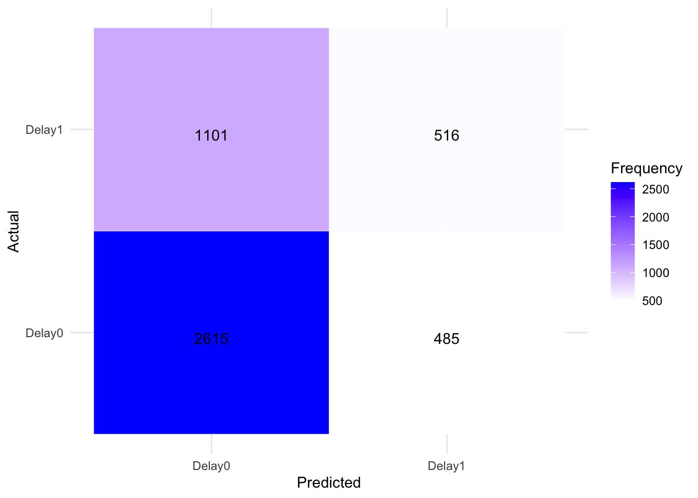
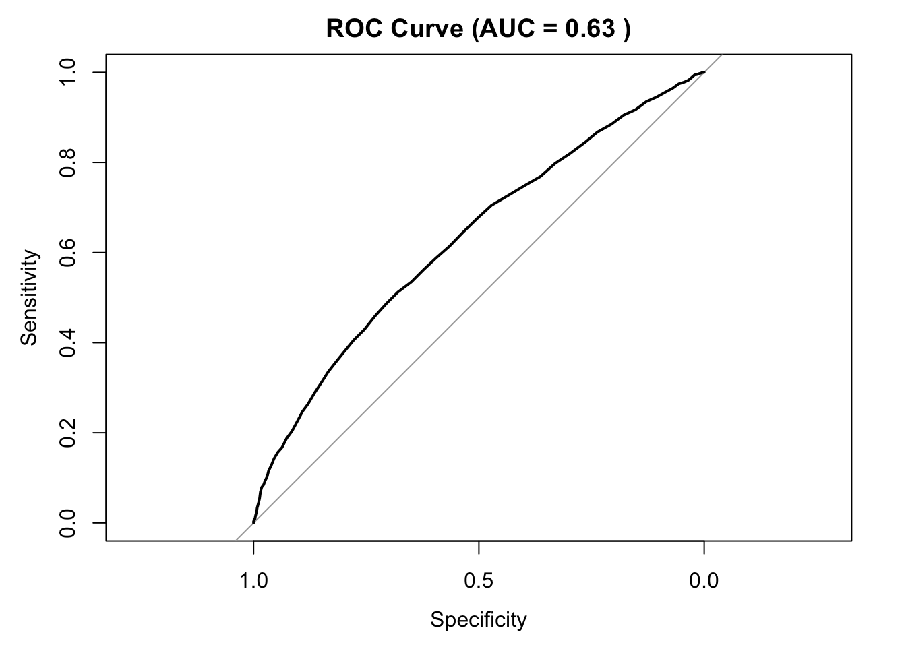
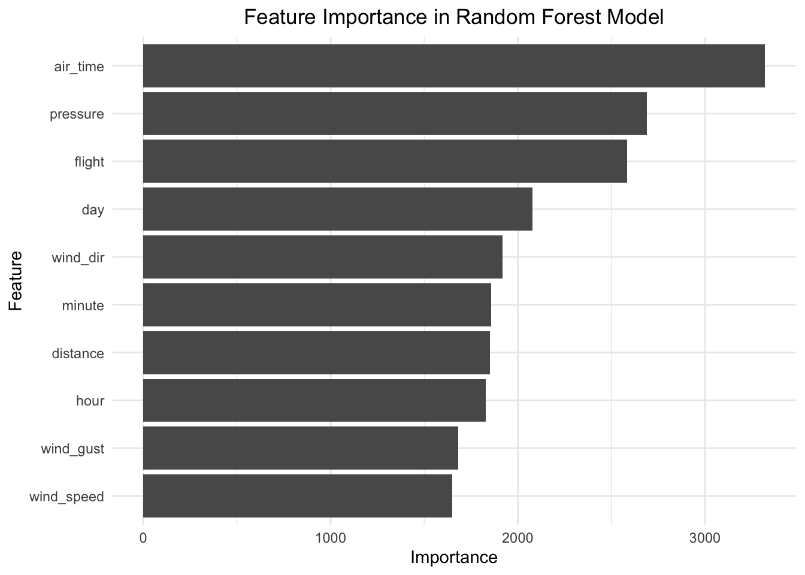

library(tidyverse)## ── Attaching core tidyverse packages ──────────────────────── tidyverse 2.0.0 ──
## ✔ dplyr 1.1.4 ✔ readr 2.1.4
## ✔ forcats 1.0.0 ✔ stringr 1.5.1
## ✔ ggplot2 3.4.4 ✔ tibble 3.2.1
## ✔ lubridate 1.9.3 ✔ tidyr 1.3.0
## ✔ purrr 1.0.2
## ── Conflicts ────────────────────────────────────────── tidyverse_conflicts() ──
## ✖ dplyr::filter() masks stats::filter()
## ✖ dplyr::lag() masks stats::lag()
## ℹ Use the conflicted package (<http://conflicted.r-lib.org/>) to force all conflicts to become errorslibrary(tidymodels)## ── Attaching packages ────────────────────────────────────── tidymodels 1.1.1 ──
## ✔ broom 1.0.5 ✔ rsample 1.2.0
## ✔ dials 1.2.0 ✔ tune 1.1.2
## ✔ infer 1.0.5 ✔ workflows 1.1.3
## ✔ modeldata 1.2.0 ✔ workflowsets 1.0.1
## ✔ parsnip 1.1.1 ✔ yardstick 1.2.0
## ✔ recipes 1.0.8
## ── Conflicts ───────────────────────────────────────── tidymodels_conflicts() ──
## ✖ scales::discard() masks purrr::discard()
## ✖ dplyr::filter() masks stats::filter()
## ✖ recipes::fixed() masks stringr::fixed()
## ✖ dplyr::lag() masks stats::lag()
## ✖ yardstick::spec() masks readr::spec()
## ✖ recipes::step() masks stats::step()
## • Learn how to get started at https://www.tidymodels.org/start/library(randomForest)## randomForest 4.7-1.1
## Type rfNews() to see new features/changes/bug fixes.
##
## Attaching package: 'randomForest'
##
## The following object is masked from 'package:dplyr':
##
## combine
##
## The following object is masked from 'package:ggplot2':
##
## marginlibrary(pROC)## Type 'citation("pROC")' for a citation.
##
## Attaching package: 'pROC'
##
## The following objects are masked from 'package:stats':
##
## cov, smooth, varlibrary(caret)## Loading required package: lattice
##
## Attaching package: 'caret'
##
## The following objects are masked from 'package:yardstick':
##
## precision, recall, sensitivity, specificity
##
## The following object is masked from 'package:purrr':
##
## liftlibrary(ggplot2)# Load and clean dataset
df_2013_raw = read_csv("data/merge_data_2013.csv", show_col_types = FALSE)## New names:
## • `` -> `...1`df_2017_raw = read_csv("data/merge_data_2017.csv", show_col_types = FALSE)## New names:
## • `` -> `...1`df_2013 = df_2013_raw |>
mutate(if_delay = if_else(arr_delay >0,1,0),
if_delay = factor(if_delay),
carrier_bin = if_else(!(carrier %in% c('UA','EV','DL','B6')),'Others',carrier),
month = factor(month,levels = 1:12, labels = month.abb[1:12])
) |>
filter(!(dest %in% setdiff(unique(df_2013_raw$dest),unique(df_2017_raw$dest)))) |>
select(-`...1`,-carrier,-tailnum,-arr_delay)
df_2017 = df_2017_raw |>
mutate(if_delay = if_else(arr_delay >0,1,0),
if_delay = factor(if_delay),
carrier_bin = if_else(!(carrier %in% c('UA','EV','DL','B6')),'Others',carrier),
month = factor(month,levels = 1:12, labels = month.abb[1:12]))|>
filter(!(dest %in% setdiff(unique(df_2017_raw$dest),unique(df_2013_raw$dest)))) |>
select(-`...1`,-carrier,-tailnum,-arr_delay) skimr::skim(df_2013)| Name | df_2013 |
| Number of rows | 72521 |
| Number of columns | 18 |
| _______________________ | |
| Column type frequency: | |
| character | 3 |
| factor | 2 |
| numeric | 13 |
| ________________________ | |
| Group variables | None |
Variable type: character
| skim_variable | n_missing | complete_rate | min | max | empty | n_unique | whitespace |
|---|---|---|---|---|---|---|---|
| origin | 0 | 1 | 3 | 3 | 0 | 3 | 0 |
| dest | 0 | 1 | 3 | 3 | 0 | 94 | 0 |
| carrier_bin | 0 | 1 | 2 | 6 | 0 | 5 | 0 |
Variable type: factor
| skim_variable | n_missing | complete_rate | ordered | n_unique | top_counts |
|---|---|---|---|---|---|
| month | 0 | 1 | FALSE | 12 | Mar: 10362, Apr: 8474, Nov: 8179, Feb: 6908 |
| if_delay | 0 | 1 | FALSE | 2 | 0: 42052, 1: 30469 |
Variable type: numeric
| skim_variable | n_missing | complete_rate | mean | sd | p0 | p25 | p50 | p75 | p100 | hist |
|---|---|---|---|---|---|---|---|---|---|---|
| year | 0 | 1 | 2013.00 | 0.00 | 2013.00 | 2013.00 | 2013.00 | 2013.00 | 2013.00 | ▁▁▇▁▁ |
| day | 0 | 1 | 15.36 | 8.49 | 1.00 | 8.00 | 15.00 | 23.00 | 31.00 | ▇▆▆▇▅ |
| hour | 0 | 1 | 13.69 | 3.86 | 5.00 | 11.00 | 14.00 | 17.00 | 23.00 | ▃▆▇▇▂ |
| flight | 0 | 1 | 2010.04 | 1638.63 | 1.00 | 604.00 | 1547.00 | 3538.00 | 6181.00 | ▇▅▂▃▁ |
| air_time | 0 | 1 | 148.66 | 91.91 | 21.00 | 83.00 | 128.00 | 184.00 | 695.00 | ▇▂▂▁▁ |
| distance | 0 | 1 | 1020.63 | 717.83 | 80.00 | 502.00 | 828.00 | 1372.00 | 4983.00 | ▇▃▂▁▁ |
| minute | 0 | 1 | 26.65 | 19.36 | 0.00 | 10.00 | 29.00 | 45.00 | 59.00 | ▇▃▇▃▅ |
| wind_dir | 0 | 1 | 253.85 | 81.77 | 10.00 | 220.00 | 280.00 | 310.00 | 360.00 | ▂▁▂▇▇ |
| wind_speed | 0 | 1 | 16.52 | 4.89 | 4.60 | 12.66 | 16.11 | 19.56 | 39.13 | ▂▇▃▁▁ |
| wind_gust | 0 | 1 | 24.91 | 5.77 | 16.11 | 20.71 | 24.17 | 27.62 | 66.75 | ▇▅▁▁▁ |
| precip | 0 | 1 | 0.00 | 0.01 | 0.00 | 0.00 | 0.00 | 0.00 | 0.53 | ▇▁▁▁▁ |
| pressure | 0 | 1 | 1015.56 | 7.22 | 983.80 | 1010.80 | 1015.40 | 1020.40 | 1040.40 | ▁▂▇▅▁ |
| visib | 0 | 1 | 9.80 | 1.09 | 0.12 | 10.00 | 10.00 | 10.00 | 10.00 | ▁▁▁▁▇ |
skimr::skim(df_2017)| Name | df_2017 |
| Number of rows | 4717 |
| Number of columns | 18 |
| _______________________ | |
| Column type frequency: | |
| character | 3 |
| factor | 2 |
| numeric | 13 |
| ________________________ | |
| Group variables | None |
Variable type: character
| skim_variable | n_missing | complete_rate | min | max | empty | n_unique | whitespace |
|---|---|---|---|---|---|---|---|
| origin | 0 | 1 | 3 | 3 | 0 | 3 | 0 |
| dest | 0 | 1 | 3 | 3 | 0 | 94 | 0 |
| carrier_bin | 0 | 1 | 2 | 6 | 0 | 5 | 0 |
Variable type: factor
| skim_variable | n_missing | complete_rate | ordered | n_unique | top_counts |
|---|---|---|---|---|---|
| month | 0 | 1 | FALSE | 11 | Jun: 1949, Mar: 985, May: 629, Feb: 402 |
| if_delay | 0 | 1 | FALSE | 2 | 0: 3100, 1: 1617 |
Variable type: numeric
| skim_variable | n_missing | complete_rate | mean | sd | p0 | p25 | p50 | p75 | p100 | hist |
|---|---|---|---|---|---|---|---|---|---|---|
| year | 0 | 1 | 2017.00 | 0.00 | 2017.0 | 2017.00 | 2017.00 | 2017.00 | 2017.00 | ▁▁▇▁▁ |
| day | 0 | 1 | 20.64 | 7.66 | 1.0 | 14.00 | 21.00 | 28.00 | 30.00 | ▁▂▂▆▇ |
| hour | 0 | 1 | 11.86 | 4.65 | 5.0 | 8.00 | 11.00 | 16.00 | 23.00 | ▇▆▃▅▁ |
| flight | 0 | 1 | 1691.21 | 1437.76 | 1.0 | 527.00 | 1346.00 | 2230.00 | 6834.00 | ▇▅▁▂▁ |
| air_time | 0 | 1 | 160.72 | 95.90 | 26.0 | 97.00 | 138.00 | 200.00 | 668.00 | ▇▂▂▁▁ |
| distance | 0 | 1 | 1132.70 | 750.90 | 94.0 | 618.00 | 963.00 | 1521.00 | 4983.00 | ▇▂▂▁▁ |
| minute | 0 | 1 | 25.79 | 19.46 | 0.0 | 5.00 | 29.00 | 40.00 | 59.00 | ▇▃▆▃▅ |
| wind_dir | 0 | 1 | 217.03 | 101.32 | 0.0 | 140.00 | 250.00 | 300.00 | 360.00 | ▅▂▂▇▇ |
| wind_speed | 0 | 1 | 9.66 | 4.63 | 0.0 | 5.75 | 9.21 | 11.51 | 31.07 | ▅▇▃▁▁ |
| wind_gust | 0 | 1 | 11.11 | 5.33 | 0.0 | 6.62 | 10.59 | 13.24 | 35.76 | ▅▇▃▁▁ |
| precip | 0 | 1 | 0.01 | 0.02 | 0.0 | 0.00 | 0.00 | 0.00 | 0.19 | ▇▁▁▁▁ |
| pressure | 0 | 1 | 1015.48 | 8.28 | 915.9 | 1013.40 | 1015.60 | 1017.50 | 1037.70 | ▁▁▁▂▇ |
| visib | 0 | 1 | 9.56 | 1.45 | 1.0 | 10.00 | 10.00 | 10.00 | 10.00 | ▁▁▁▁▇ |
# Split data into train and test
set.seed(123)
train = df_2013
test = df_2017
train$if_delay = as.factor(train$if_delay)
test$if_delay = as.factor(test$if_delay)
levels(train$if_delay)## [1] "0" "1"# Rename factor levels
levels(train$if_delay) = c("Delay0", "Delay1")
levels(test$if_delay) = c("Delay0", "Delay1")
# Train a random forest model with hyperparameter tuning
tune_grid = expand.grid(mtry = seq(2, 18, by = 1))
control = trainControl(method="cv", number = 5, classProbs = TRUE, summaryFunction = twoClassSummary) # 5-fold cross-validation
rf_model_tuned = train(if_delay ~ ., data = train, method = "rf",
tuneGrid = tune_grid, trControl = control, ntree = 100, metric = "ROC")
print(rf_model_tuned)## Random Forest
##
## 72521 samples
## 17 predictor
## 2 classes: 'Delay0', 'Delay1'
##
## No pre-processing
## Resampling: Cross-Validated (5 fold)
## Summary of sample sizes: 58017, 58017, 58016, 58017, 58017
## Resampling results across tuning parameters:
##
## mtry ROC Sens Spec
## 2 0.6632883 0.9962903 0.02080782
## 3 0.6878800 0.9720109 0.11565879
## 4 0.7060107 0.9554122 0.18192229
## 5 0.7215987 0.9328450 0.26187269
## 6 0.7337889 0.9184818 0.31536974
## 7 0.7403773 0.9090886 0.34759950
## 8 0.7484418 0.8960334 0.38816510
## 9 0.7558145 0.8891847 0.41973798
## 10 0.7596153 0.8797201 0.44592887
## 11 0.7618687 0.8675211 0.47198801
## 12 0.7648188 0.8647863 0.48324522
## 13 0.7649154 0.8570578 0.49824427
## 14 0.7657634 0.8514934 0.50822166
## 15 0.7667856 0.8441928 0.52069324
## 16 0.7668853 0.8406733 0.52568215
## 17 0.7668446 0.8383668 0.52991584
## 18 0.7665051 0.8351326 0.53526562
##
## ROC was used to select the optimal model using the largest value.
## The final value used for the model was mtry = 16.predictions = predict(rf_model_tuned, newdata = test, type = "raw")
probabilities = predict(rf_model_tuned, newdata = test, type = "prob")
test$predicted_class = predictions
test$prob_0 = probabilities[, 1]
test$prob_1 = probabilities[, 2]
levels(test$predicted_class) = levels(test$if_delay)
confusion_matrix = confusionMatrix(test$predicted_class, test$if_delay)
print(confusion_matrix)## Confusion Matrix and Statistics
##
## Reference
## Prediction Delay0 Delay1
## Delay0 2615 1101
## Delay1 485 516
##
## Accuracy : 0.6638
## 95% CI : (0.6501, 0.6773)
## No Information Rate : 0.6572
## P-Value [Acc > NIR] : 0.1748
##
## Kappa : 0.179
##
## Mcnemar's Test P-Value : <2e-16
##
## Sensitivity : 0.8435
## Specificity : 0.3191
## Pos Pred Value : 0.7037
## Neg Pred Value : 0.5155
## Prevalence : 0.6572
## Detection Rate : 0.5544
## Detection Prevalence : 0.7878
## Balanced Accuracy : 0.5813
##
## 'Positive' Class : Delay0
## cm = confusion_matrix$table
cm_melted = as.data.frame(as.table(cm))
colnames(cm_melted) = c("Actual", "Predicted", "Frequency")
ggplot(cm_melted, aes(x = Actual, y = Predicted, fill = Frequency)) +
geom_tile(color = "white") +
geom_text(aes(label = Frequency), vjust = 1) +
scale_fill_gradient(low = "white", high = "blue") +
theme_minimal() +
labs(x = 'Predicted', y = 'Actual', fill = 'Frequency')
accuracy = confusion_matrix$overall['Accuracy']
precision = posPredValue(test$predicted_class, test$if_delay)
recall = sensitivity(test$predicted_class, test$if_delay)
f1_score = (2 * precision * recall) / (precision + recall)
roc_curve_results = roc(test$if_delay, test$prob_1)## Setting levels: control = Delay0, case = Delay1## Setting direction: controls < casesauc_results = auc(roc_curve_results)
plot(roc_curve_results, main = paste("ROC Curve (AUC =", round(auc_results, 2), ")"))
print(paste("Accuracy:", accuracy))## [1] "Accuracy: 0.66376934492262"print(paste("Precision:", precision))## [1] "Precision: 0.703713670613563"print(paste("Recall:", recall))## [1] "Recall: 0.843548387096774"print(paste("F1 Score:", f1_score))## [1] "F1 Score: 0.76731220657277"print(paste("AUC:", auc_results))## [1] "AUC: 0.630070022143755"# Filtering out features below the threshold
threshold = 500
importance = as.data.frame(importance(rf_model_tuned$finalModel))
importance$Feature = row.names(importance)
filtered_importance = importance[importance$MeanDecreaseGini > threshold, ]
# Generating graph with filtered data
ggplot(filtered_importance, aes(x = reorder(Feature, MeanDecreaseGini), y = MeanDecreaseGini)) +
geom_bar(stat = "identity") +
coord_flip() +
xlab("Feature") +
ylab("Importance") +
theme_minimal() +
theme(plot.title = element_text(hjust = 0.5)) +
ggtitle("Feature Importance in Random Forest Model")